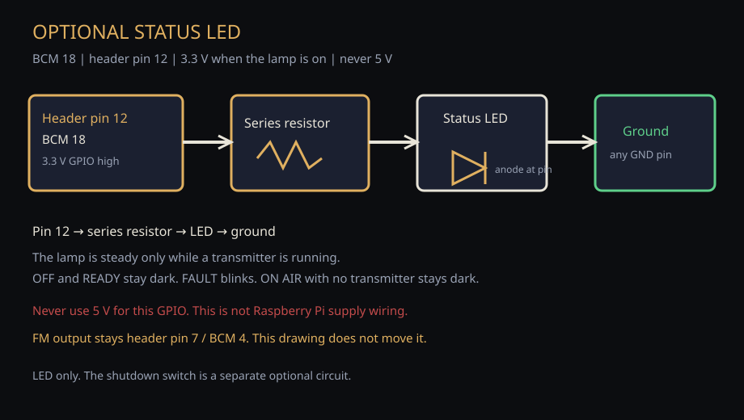
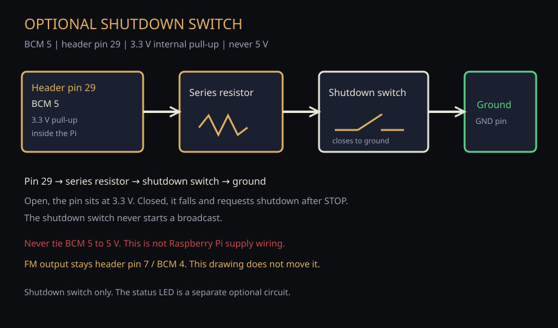
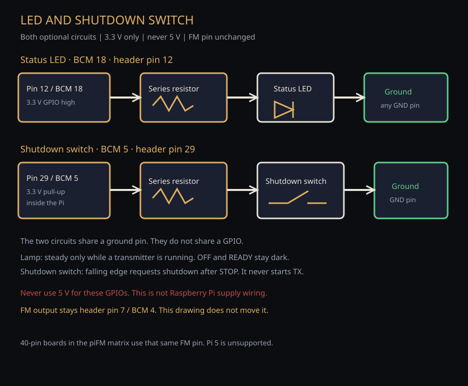

Optional LED and shutdown switch
These drawings, the helper, and the hardware notes ship with this install. They open from the Pi with no GitHub connection.
The status LED and the shutdown switch are optional. The Broadcast Deck works without either of them. Both stay off until you enable them. FM output stays header pin 7 / BCM 4. These pages do not move that pin.
Status LED only
Header pin 12, BCM 18, through a series resistor, then the LED, then ground. GPIO high is 3.3 V. Never use 5 V on this pin.

Shutdown switch only
Header pin 29, BCM 5, through a series resistor, then the shutdown switch, then ground. The Pi holds the pin at 3.3 V with its internal pull-up until the switch closes. Never tie this pin to 5 V. This is not Raspberry Pi supply wiring.

LED and shutdown switch
Use both circuits when you want the lamp and the shutdown switch. They share a ground pin. They do not share a GPIO.

What the lamp and the switch do
- The lamp is steady only while a transmitter is actually running.
- OFF and READY stay dark. FAULT blinks. ON AIR with no running transmitter stays dark.
- The shutdown switch requests shutdown after STOP. It never starts a broadcast.
Enable only what you wired
Stop the appliance service first. One helper writes the documented default pins and turns on the part you name. --led is the LED only. --switch is the shutdown switch only. --both enables both. Each run sets that selection. The helper does not change the FM pin, does not restart the service, and does not start a transmitter.
python3 scripts/enable-optional-panel.py --led python3 scripts/enable-optional-panel.py --switch python3 scripts/enable-optional-panel.py --both
Add --dry-run to preview. After it writes the config, start the service yourself only when the station should remain OFF AIR. To turn the panel off again, set gpio_enabled to false in the appliance config and start the service the same way. The Deck has no GPIO control for this.
Read the helper that ships with this install
Same notes on disk
- Hardware guide — pins, board matrix, and this panel
- 40-pin header — FM output is header pin 7 / BCM 4
- Minimal RF path — unchanged by this panel
- Install guide


Never use 5 V for the LED or the shutdown switch. Filtering, antenna, and legal authorization for FM stay your responsibility.